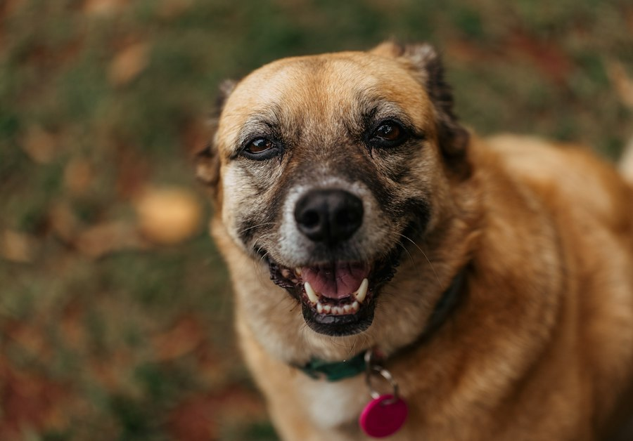
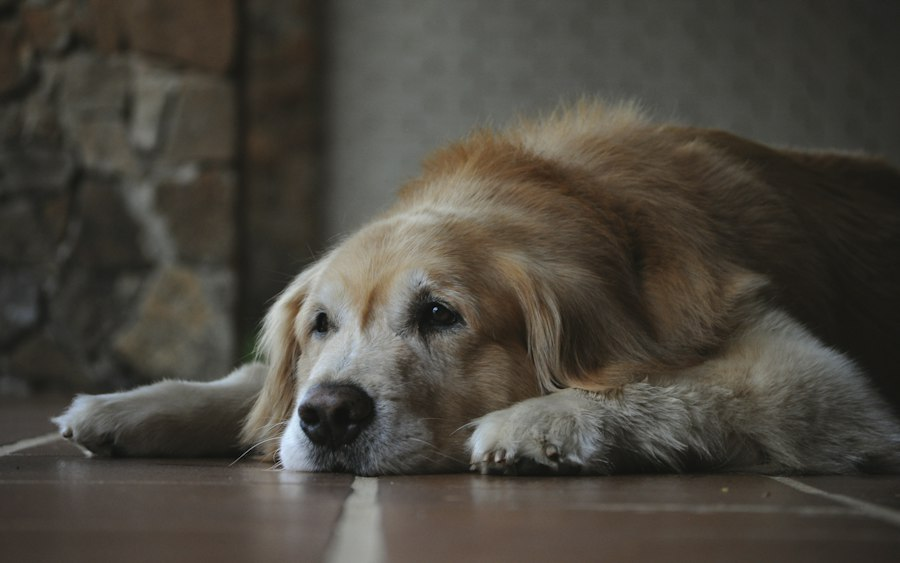
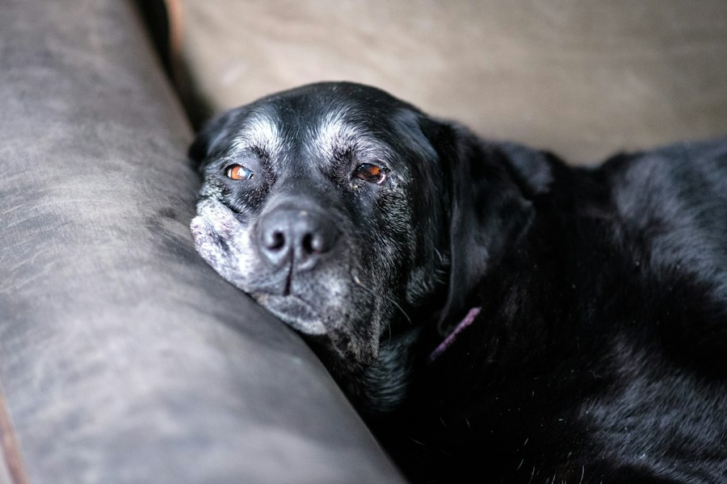
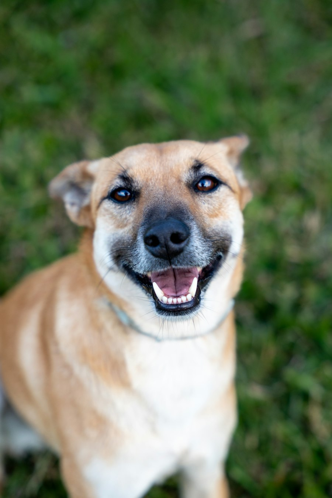
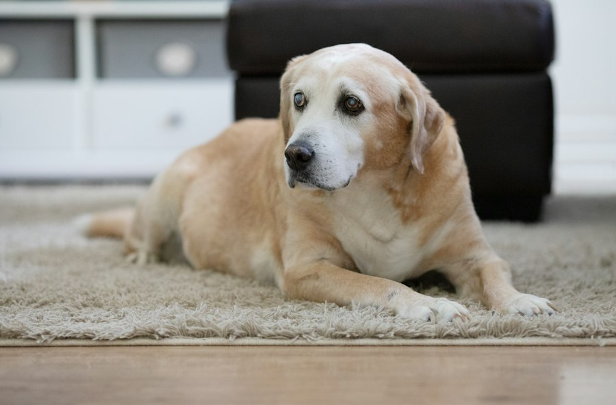

保護犬・老犬介護を支える収益循環
買い物と紹介が、保護犬と老犬の支えになる。
アフィリエイトと紹介の収益を、決まった割合で保護犬活動と老犬介護の支援に充て、毎月その実績を公開しています。
収益の50%を保護犬と老犬介護の支援へ
毎月の実績を支払い先まで公開
報酬が出る紹介には【PR】と表示
3つのステップ
募金をお願いするのではなく、ふだんの買い物やサービス選びが、そのまま支援につながる形をつくっています。
役に立つものを紹介する
AIアバターが、犬との暮らしやシニア犬の介護に役立つ商品・サービス、企業の紹介制度を紹介します。
紹介から報酬が生まれる
リンクからの購入や、紹介制度を通じた新規の入会・登録があると、企業から報酬が支払われます。
決まった割合で支援する
報酬の50%を保護犬活動と老犬介護の支援に充て、毎月その額と支払い先を公開します。
お金が、ぐるっと回る
報酬の使い道を公開することで信頼が生まれ、発信が広がり、また次の支援につながります。
- 発信SNSで役立つ情報と、商品・紹介制度を紹介
- 購入・入会見てくださった方が、リンクや紹介コードから購入・入会
- 報酬企業からアフィリエイト報酬・紹介報酬が届く
- 配分決まった割合で、1円単位まで分ける
- 支援保護団体や、保護犬・老犬の医療費・介護用品へ
- 公開毎月の実績と支払い先をこのサイトで報告
2つの収益源
収益の使い道
配分の割合はあらかじめ決めて公開しています。募金は配分に入れず、全額を支援に充てます。
- 保護犬への支援25%
- 老犬介護への支援25%
- 発信の運営35%
- 予備15%
実績の公開は準備中です
最初の月次報告ができしだい、毎月10日までにこのページと「実績」に掲載します。収益・配分・支払い先・未払の残高まで、すべて公開します。
犬たちとの毎日
写真はイメージです（Unsplash の素材）。実際の活動の写真は、支援先の団体や飼い主さんの同意をいただいたものから順に載せていきます。





あなたの「紹介」が、犬たちの支えになります
新しく働き始める方、仕事場を探している方に、iNU の紹介リンクを使っていただくことで、紹介報酬が保護犬と老犬介護の支援に回ります。